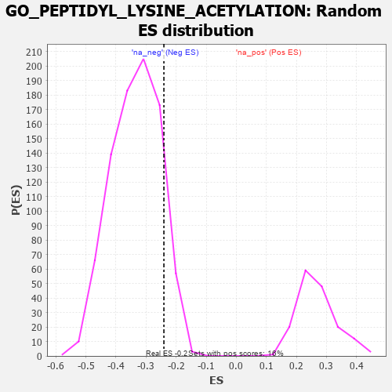

| | | Dataset | 7d |
| Phenotype | NoPhenotypeAvailable |
| Upregulated in class | na_neg |
| GeneSet | GO_PEPTIDYL_LYSINE_ACETYLATION |
| Enrichment Score (ES) | -0.24071427 |
| Normalized Enrichment Score (NES) | -0.71841574 |
| Nominal p-value | 0.89605737 |
| FDR q-value | 1.0 |
| FWER p-Value | 1.0 |
Table: GSEA Results Summary
 Fig 1: Enrichment plot: GO_PEPTIDYL_LYSINE_ACETYLATION
Fig 1: Enrichment plot: GO_PEPTIDYL_LYSINE_ACETYLATION
Profile of the Running ES Score & Positions of GeneSet Members on the Rank Ordered List
| PROBE | GENE SYMBOL | GENE_TITLE | RANK IN GENE LIST | RANK METRIC SCORE | RUNNING ES | CORE ENRICHMENT | | 1 | SPI1 | | | 162 | 1.182 | 0.0307 | Yes |
| 2 | HAT1 | | | 454 | 0.659 | 0.0225 | Yes |
| 3 | MYOD1 | | | 504 | 0.628 | 0.0435 | Yes |
| 4 | NOC2L | | | 647 | 0.578 | 0.0506 | Yes |
| 5 | PHF10 | | | 834 | 0.523 | 0.0497 | Yes |
| 6 | SGF29 | | | 840 | 0.521 | 0.0717 | Yes |
| 7 | HCFC1 | | | 902 | 0.506 | 0.0859 | Yes |
| 8 | ING3 | | | 1039 | 0.476 | 0.0893 | Yes |
| 9 | TAF9 | | | 1046 | 0.475 | 0.1091 | Yes |
| 10 | BRD8 | | | 1101 | 0.463 | 0.1223 | Yes |
| 11 | KMT2A | | | 1130 | 0.458 | 0.1386 | Yes |
| 12 | KAT8 | | | 1231 | 0.442 | 0.1451 | Yes |
| 13 | KAT7 | | | 1240 | 0.440 | 0.1632 | Yes |
| 14 | TAF6 | | | 1512 | 0.389 | 0.1458 | Yes |
| 15 | DPF3 | | | 1541 | 0.385 | 0.1589 | Yes |
| 16 | TADA3 | | | 1580 | 0.378 | 0.1704 | Yes |
| 17 | SMAD4 | | | 1860 | 0.326 | 0.1493 | Yes |
| 18 | MCRS1 | | | 1996 | 0.305 | 0.1454 | Yes |
| 19 | DMAP1 | | | 2025 | 0.301 | 0.1550 | Yes |
| 20 | IRF4 | | | 2054 | 0.298 | 0.1643 | Yes |
| 21 | BRPF1 | | | 2085 | 0.293 | 0.1732 | Yes |
| 22 | TAF7 | | | 2092 | 0.292 | 0.1851 | Yes |
| 23 | JADE1 | | | 2141 | 0.286 | 0.1914 | Yes |
| 24 | SIN3A | | | 2361 | 0.251 | 0.1746 | No |
| 25 | KAT6A | | | 2444 | 0.237 | 0.1745 | No |
| 26 | KAT2B | | | 2502 | 0.226 | 0.1771 | No |
| 27 | MBD3 | | | 2524 | 0.223 | 0.1841 | No |
| 28 | KAT5 | | | 2644 | 0.206 | 0.1780 | No |
| 29 | EPC1 | | | 2663 | 0.204 | 0.1845 | No |
| 30 | TAF12 | | | 2686 | 0.201 | 0.1904 | No |
| 31 | KAT6B | | | 2821 | 0.180 | 0.1813 | No |
| 32 | PHF14 | | | 2838 | 0.178 | 0.1870 | No |
| 33 | WDR5 | | | 2892 | 0.168 | 0.1876 | No |
| 34 | BRD7 | | | 3018 | 0.147 | 0.1781 | No |
| 35 | BRCA2 | | | 3024 | 0.146 | 0.1838 | No |
| 36 | LEF1 | | | 3037 | 0.144 | 0.1885 | No |
| 37 | MAPK3 | | | 3589 | 0.062 | 0.1216 | No |
| 38 | ATG5 | | | 4051 | -0.016 | 0.0641 | No |
| 39 | RSF1 | | | 4267 | -0.053 | 0.0392 | No |
| 40 | CTBP1 | | | 4323 | -0.064 | 0.0350 | No |
| 41 | SETD5 | | | 4343 | -0.067 | 0.0355 | No |
| 42 | BAG6 | | | 4563 | -0.108 | 0.0125 | No |
| 43 | GATA3 | | | 4614 | -0.120 | 0.0114 | No |
| 44 | TAF10 | | | 4652 | -0.128 | 0.0123 | No |
| 45 | WBP2 | | | 4780 | -0.153 | 0.0029 | No |
| 46 | EP300 | | | 4941 | -0.186 | -0.0093 | No |
| 47 | TAF5 | | | 5031 | -0.204 | -0.0117 | No |
| 48 | ING4 | | | 5084 | -0.221 | -0.0087 | No |
| 49 | FLCN | | | 5140 | -0.235 | -0.0054 | No |
| 50 | HINT2 | | | 5889 | -0.431 | -0.0813 | No |
| 51 | SET | | | 5895 | -0.434 | -0.0631 | No |
| 52 | PCGF2 | | | 5943 | -0.451 | -0.0495 | No |
| 53 | LDB1 | | | 5944 | -0.451 | -0.0300 | No |
| 54 | IWS1 | | | 7613 | -1.587 | -0.1720 | No |
| 55 | TAF1 | | | 7643 | -1.633 | -0.1049 | No |
| 56 | ARRB1 | | | 7935 | -3.377 | 0.0045 | No |
Table: GSEA details [plain text format]

Fig 2: GO_PEPTIDYL_LYSINE_ACETYLATION: Random ES distribution
Gene set null distribution of ES for GO_PEPTIDYL_LYSINE_ACETYLATION